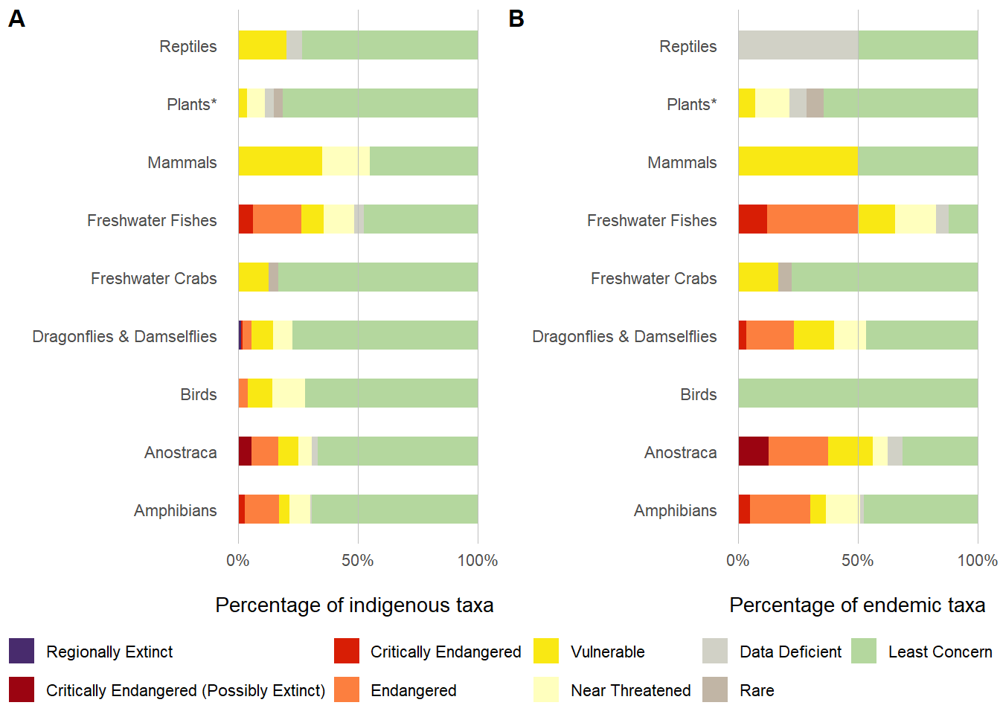
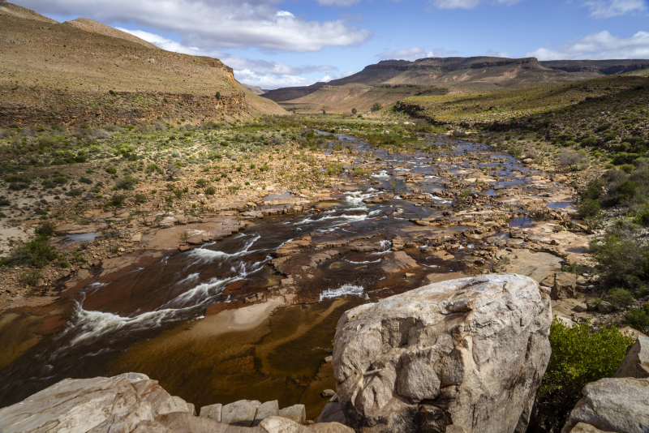
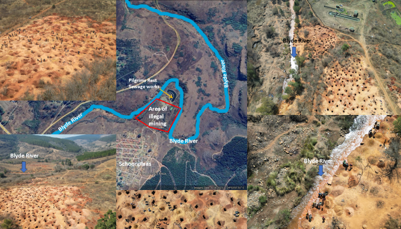
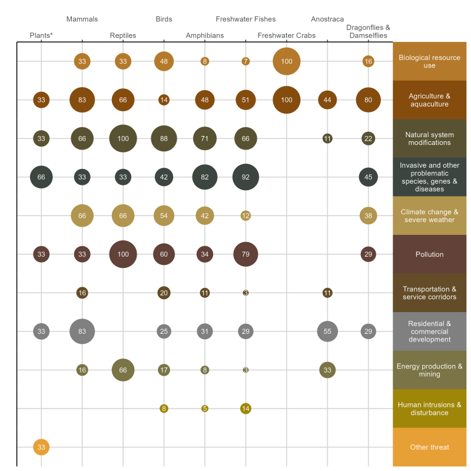

![]()

Freshwater ecosystems remain under severe pressure. Because these habitats are geographically constrained, impacts accumulate. Between NBA 2018 and 2024, freshwater fishes have remained among the most threatened vertebrate group. Waterbirds dependent on freshwater habitats are declining, with several species becoming more threatened since 2015. Physical modification of rivers and wetlands, invasive alien species and climate change continue to accelerate declines.
Monitoring capacity within provincial agencies has declined sharply, while taxonomic uncertainty still limits assessment for several groups. However, an active community of experts and robust baseline studies provide a strong anchor point for assessments until better data becomes available.
There are, nonetheless, positive developments: investment in new tools such as eDNA, remote sensing, and data systems that collate freshwater species collections and have already improved planning and prioritisation. Further, recent support for taxonomic foundational research has started to close key knowledge gaps, especially for some vertebrate groups.
Going forward, better coordination of monitoring, targeted use of both established and emerging technologies, and stronger collaboration across government and non-government partners are essential to halt further declines. Protecting freshwater biodiversity is fundamental to sustaining ecosystem services that support human well-being.

20%
of 655 taxa assessed are
Threatened
of 655 taxa assessed are
Threatened
66%
of 396 taxa assessed are
Well Protected
of 396 taxa assessed are
Well Protected
8%
of 396 taxa assessed are
Not Protected
of 396 taxa assessed are
Not Protected
Threat status and pressures
Using the IUCN Red List Categories and Criteria, 655 taxa that depend on freshwater habitats, including rivers and wetlands, were assessed to determine their risk of extinction (Figure 1, Table 1). To date, many freshwater dependent taxa have not been included in the South Africa Red List assessments due to the lack of comprehensive taxonomic understanding as well as limited distribution data at the species or subspecies level, at which these assessments are conducted. South Africa, as a mega-diverse country, might not have the capacity to assess all known freshwater species, and hence groups included provide some insight into the conditions experienced in these habitats at the species level. See Approach for more details about the selection of groups included in the assessment process and the methodology used.
Here we present the threat status of nine taxonomic groups. Freshwater fishes and Odonata have not had their Red List assessments updated since the 2018 NBA, and here we present the findings of the 2018 assessments. These groups are due for reassessment in the next two years (2026/27). Birds, mammals, amphibians, and reptiles have been reassessed and completed within the last three years (2023 to 2025).
In general, most freshwater groups show a high sensitivity to multiple pressures, the most serious being the loss of natural habitat owing to habitat modification, e.g., wetland drainage, pollution of river systems, agricultural and housing developments, over-abstraction of water, and the impacts of invasive alien species (Box 4) and climate change. Of all the assessed freshwater species, 20% (131 taxa) are classified as threatened (CR, CR(PE), EN and VU) with extinction, when accounting for other taxa of conservation concern (ToCC) (threatened species, DD, Rare and NT), these include 31% (206) of assessed taxa (see South African Red List categories here ). Further, 32% (201 taxa) of assessed taxa are endemic to South Africa, of which 42% (90 taxa) are threatened with extinction, meaning the responsibility to protect these species and prevent further losses rests within the country.
| Taxonomic grouping | Regionally Extinct | Critically Endangered (Possibly Extinct) | Critically Endangered | Endangered | Vulnerable | Near Threatened | Data Deficient | Rare | Least Concern | Total | |
|---|---|---|---|---|---|---|---|---|---|---|---|
| Amphibians | All indigenous | 0 | 0 | 3 | 17 | 5 | 10 | 1 | 0 | 81 | 117 |
| Endemic | 0 | 0 | 3 | 16 | 4 | 9 | 1 | 0 | 30 | 63 | |
| Anostraca | All indigenous | 0 | 2 | 0 | 4 | 3 | 2 | 1 | 0 | 24 | 36 |
| Endemic | 0 | 2 | 0 | 4 | 3 | 1 | 1 | 0 | 5 | 16 | |
| Birds | All indigenous | 0 | 0 | 0 | 5 | 14 | 18 | 0 | 0 | 96 | 133 |
| Endemic | 0 | 0 | 0 | 0 | 0 | 0 | 0 | 0 | 1 | 1 | |
| Dragonflies & Damselflies | All indigenous | 2 | 0 | 1 | 6 | 15 | 13 | 0 | 0 | 127 | 164 |
| Endemic | 0 | 0 | 1 | 6 | 5 | 4 | 0 | 0 | 14 | 30 | |
| Freshwater Crabs | All indigenous | 0 | 0 | 0 | 0 | 3 | 0 | 0 | 1 | 20 | 24 |
| Endemic | 0 | 0 | 0 | 0 | 3 | 0 | 0 | 1 | 14 | 18 | |
| Freshwater Fishes | All indigenous | 0 | 0 | 7 | 24 | 11 | 15 | 5 | 0 | 56 | 118 |
| Endemic | 0 | 0 | 7 | 22 | 9 | 10 | 3 | 0 | 7 | 58 | |
| Mammals | All indigenous | 0 | 0 | 0 | 0 | 7 | 4 | 0 | 0 | 9 | 20 |
| Endemic | 0 | 0 | 0 | 0 | 4 | 0 | 0 | 0 | 4 | 8 | |
| Plants* | All indigenous | 0 | 0 | 0 | 0 | 1 | 2 | 1 | 1 | 22 | 27 |
| Endemic | 0 | 0 | 0 | 0 | 1 | 2 | 1 | 1 | 9 | 14 | |
| Reptiles | All indigenous | 0 | 0 | 0 | 0 | 3 | 0 | 1 | 0 | 11 | 15 |
| Endemic | 0 | 0 | 0 | 0 | 0 | 0 | 1 | 0 | 1 | 2 |
Note: the sections below (and Figure 1 and Figure 2)) give brief summaries about freshwater species in these taxonomic groups. For a full reflection on entire taxonomic groups, please click on the headings to access the subsections of the website under Species findings.
Anostraca
South African Anostraca species represent habitat specialists that occupy temporary freshwater habitats. This group was assessed for the first time as part of the 2025 NBA. This assessment also contributed to increasing the global number of assessed species from these highly dynamic habitats. Of the 36 species assessed, 25% (9 species) were found to be threatened with extinction (Figure 1 and Table 1). The main driver of the threat was habitat loss and degradation due to urban expansion and agricultural activities. These species’ habitats include a range of temporary systems, ranging from endorheic (internally drained) wetlands, remnant riverine pools, rock pools, roadside ditches, and even animal wallows. These habitats are not permanent features in the landscape and hence are impacted by activities when they are not inundated. An increase in awareness is needed to protect these highly diverse and dynamic habitats. In recent years, there has been some interest in sampling and identifying these species using both morphology and genetic tools. This has led to the discovery of new speciesrogersmilne2021?, as well as range extensions.
Freshwater fishes
South Africa’s freshwater fishes are the second most threatened comprehensively assessed taxonomic group in South Africa(see headline indicators), with 36% (42 taxa) assessed as threatened, and when only considering endemics, 66% (38) are threatened (Figure 1 and Table 1). Freshwater fish have not been reassessed since 2018, but field observations and the status of South African rivers and wetlands indicate that pressures have not ceased and continue to mount (see freshwater ecosystem status/condition). A breakthrough for this group since the last assessment in 2018 has been an immense investment in the expansion of the taxonomic understanding of many freshwater fishes, through resolving species complexes and describing new species (see Freshwater fishes page for more details). These taxonomic advances are critical to enable Red List assessment updates. Along with taxonomic updates of many species, a large number of field surveys have improved our understanding of active threats and the condition of the habitats of many fishes (See freshwater fish page for more details).
Major pressures that have persisted for freshwater fishes and their habitat are competition with invasive alien fish and degradation of their freshwater habitat through water abstraction, pollution, and inappropriate sedimentation. Many emerging pressures have been identified, through recent surveys, but their impacts on freshwater fishes will be interpreted and accounted for within the next update of the Red List of South African freshwater fishes. Of particular concern is Illegal mining activities in the north-eastern regions of the country within river systems hosting highly threatened and restricted fishes (e.g. Enteromius treurensis) (see Box 2).
NoteBox 2. New active pressures in river systems that are impacting highly threatened species
Unregulated gold mining (commonly referred to as zama-zama activities in South Africa) presents an escalating threat to the Blyde, Sabi and lower Crocodile River tributaries in the Mpumalanga Province. Expansion of these activities is currently occurring with limited law enforcement or coordinated institutional response. Impacts include physical disturbance of riverbeds and banks, and the use of mercury and cyanide for gold extraction, with consequent cumulative risks to aquatic biota.
The Blyde River population of Enteromius treurensis (CR) is of particular concern. Habitat degradation in this system has intensified to the extent that extinction of this taxon in the near future is plausible if current pressures persist. The scale and nature of impacts indicate that an effective response will require coordinated, cross-sectoral intervention across relevant government departments.


Birds
There are 166 birds associated with freshwater ecosystems (waterbirds), and of these, 133 have been assessed using the IUCN Regional Red List. Of these waterbirds, 14% (19 species) of the species are threatened with extinction and 28% (37 species) are taxa of conservation concern (TOCC) (threatened species, DD, Rare and NT) (Figure 1 and Table 1). Since the 2015 Red List assessment, there has been a sharp decline in the status of many waterbird species, with many species recently being uplisted from Least Concern to an IUCN threat category (see Box 3). These changes can largely be attributed to impacts on habitat condition, with many species experiencing a decline in habitat quality (Figure 2), resulting in population declines that have been noted through monitoring efforts by the Coordinated Waterbird Counts (CWAC). An example is the African darter (Anhinga rufa) (NT) which has experienced a significant decline in its habitat availability through habitat loss (e.g. wetland drainage), impacts on breeding sites and environmental pollution (e.g. pesticide use and run-off). The Maccoa duck (Oxyura maccoa), has been uplisted from Near Threatened to Vulnerable, due to the impacts of invasive alien species (e.g., water hyacinth (Eichhornia crassipes)) in its wetland habitats. The use of biological control has shown some improvements and is considered one of the available measures to control the impacts of these invasive alien plant species. These threats are well aligned to the pressures identified for freshwater ecosystems, both for rivers and wetland habitats experiencing deterioration in condition. Evident, in wetlands being assessed as the most threatened and least protected ecosystem, both in the 2019 and in the 2025 NBA ecosystem assessment.
The half-collared kingfisher (Alcedo semitorquata) (VU) provides an example of a habitat specialist dependent on fast-flowing, clear, perennial streams and rivers that offer sheltered conditions and dense marginal vegetation. These types of habitats are increasingly threatened by pollution, siltation, and reduced flow due to over-abstraction of water and prolonged drought. The species has a small population within its South African range, and its required habitats are becoming more fragmented due to a decline in condition.
Besides habitat loss, many of these waterbirds are congregatory in nature, which makes them vulnerable to disease outbreaks. Waterbirds merit increased protection at key protected areas to prevent accelerated rates of decline. Urban freshwater habitats present unique opportunities for citizen-led habitat restoration and monitoring.
Reptiles
Of the 407 reptile species indigenous to South Africa,15 species are dependent on freshwater habitats. Four of the 15 species (20%) are taxa of conservation concern (ToCC), three of these are assessed as Vulnerable, and one is assessed as Data Deficient (Figure 1 and Table 1) (See reptile the Conservation assessment of South African reptiles for more details. The major pressures on these ToCC are natural system modification and pollution, which are impacting all threatened species, followed by 66% of ToCC impacted by agricultural and mining activities, causing habitat degradation (Figure 3). Climate change and its associated effects on weather patterns and temperature have been identified as a current or potential future threat to some threatened reptile species. However, more monitoring is required to fully understand these impacts in South Africa. Increase in intensity of fires and a change in the timing of seasonal burns may affect these species during their hibernation period. While no freshwater-associated species have experienced a change in their IUCN Red List status, resulting in the RLI remaining stable, there has still been a continuation and exacerbation of pressures within these species’ habitats, which have not triggered an uplisting using the IUCN Red List threshold.
The variable hinged terrapin (Pelusios rhodesianus) (VU), is not endemic to South Africa; however, the South African subpopulation is highly isolated, and its nearest neighbouring subpopulation is hundreds of kilometres away, isolating it and preventing a rescue effect. There has been no change in its IUCN Red List status since the previous assessment; however, it is still experiencing a decline in the extent and quality of its habitat, that are impacted by the filling-in of wetlands at some localities as well as continuous pollution. It is suspected that its habitat is being fragmented due to the expansion of sugarcane farming, silviculture and mining activities within its rangeHofmeyrBoycott2023b?. The yellow-bellied hinged terrapin(Pelusios castanoides) (VU) has faced similar pressures, and in addition to habitat loss due to in-filling and/or drainage of its wetlands, swamps, marshes, and pans, the long-term effects of insecticide spraying are suspected to be causing population decline. Further research is required to establish the degree of impact [HofmeyrBoycott2023b?).
The Nile crocodile (Crocodylus niloticus) (VU) requires a large natural habitat to support a sufficient prey base. However, it has experienced overall extensive degradation of its habitats, including fragmentation through dam construction and general pollution and water abstraction of rivers and estuaries. An improvement in the control of the invasive common carp (Cyprinus carpio), which causes pansteatitis in Nile crocodiles, has shown positive results. The combination of these pressures has resulted in the species declining to the point that it was uplisted from Least Concern regionally to Vulnerable in 2017. There is uncertainty around how many individuals are in the wild population of the species, and a country-wide monitoring programme would support efforts to understand the species distribution and wild population better. While CITES, are able to monitor trade in the species, there is still some uncertainty around the actual number of individuals impacted by its use and trade, and better monitoring would improve understanding of this pressure in future assessments [Turner2023?).
The cream-spotted mountain snake (Montaspis gilvomaculata) is Data Deficient; little is known about this species, however, it is assumed to make use of mountain streams and vlei habitat at high altitude. This species is endemic to South Africa, specifically in the KwaZulu-Natal Drakensberg Mountain, where only five collections have been madeMaritz2023?.
See the full Conservation status of the reptiles of South Africa, Eswatini and Lesotho here.
NoteBox 4. Risks of alien freshwater crayfish introductions to South Africa
Alien freshwater crayfish have been widely introduced worldwide for aquaculture and the pet trade. Despite providing societal benefits, crayfish introductions are also known to cause adverse impacts in areas of introduction. A recent study evaluated the risk associated with 14 alien freshwater crayfish introductions in South Africa, most of which were classified as high risk due to their potential for major negative effectsBotha? et al. (in press). Eight crayfish species are listed on the NEM: BA A&IS Regulations and are presumed to be present in South Africa based on historical introductionWilson? and Kumschick 2024. However, uncertainty remains about the identity and occurrence of some species. Cherax cainii and C. tenuimanus were introduced for aquaculture, but it is uncertain if both species are present, and genetic verification is needed to confirm their presence. Similarly, Cherax destructor was also introduced for aquaculture, but its presence, in cultivation or in the wild, is unclear.
Evidence indicates that Cherax quadricarinatus and Procambarus clarkii have established populations across several river systems. Containment has been proposed as the primary management strategy. Procambarus clarkii is not listed under the A&IS Regulations; it was previously listed as a prohibited species but was removed from the regulations in 2021, creating legal uncertainty that may have facilitated its spread. Anecdotal evidence suggests that five other crayfish species (Faxonius limosus, F. rusticus, Pontastacus leptodactylus, Pacifastacus leniusculus) listed under the A&IS Regulations are also present in South Africa, likely due to the pet trade- a significant invasion pathway that is difficult to manage. Several other crayfish species that have a global invasion history (Faxonius immunis, F. juvenilis, F. virilis, Procambarus acutus and P. virginalis) are not yet present in South Africa, highlighting a substantial invasion debt. Management options should prioritise preventing further introductions.

Amphibians
A total of 135 amphibian species occur in South Africa. These include a few recently described species; of these, 117 species are dependent on freshwater ecosystems for survival and successful reproduction. Twenty-one percent of the 117 taxa (25 taxa) are threatened with extinction, and an additional 9% (11 taxa) are ToCC (1 DD and 10 NT). Almost ~50% (63 taxa) of freshwater-dependent amphibians are endemic to South Africa, of which 36% (23 taxa) are threatened with extinction and 16% (10 taxa) are additional ToCC Figure 1 and Table 1). The most important pressure driving species threat status for amphibians is the impacts of invasive alien species, including infectious diseases and invasive alien trees. Invasive alien trees impact water storage reservoirs and interrupt stream-flow consistency. For example, the Cape Flats frog or Micro frog (Microbatrachella capensis) (EN) has had all known subpopulations impacted by invasive alien trees, which alter the water quality and result in drying out of their breeding sites, this species has also lost most of its habitat to urban development and still faces continued threats from development in its remaining, highly fragmented populations, on the coastal plains of the Western CapeAngusetal2025?. Amphibians are also heavily impacted by habitat loss and degradation through natural system modification as a result of dam and water management activities. Habitat loss due to agricultural-related activities impacts at least 48% of ToCC, and these activities have not ceased or declined since the previous assessment.
Amphibians have shown a genuine change in Red List status between the assessment period 2017 to 2025 for only two species, and one of these is dependent on freshwater habitats Figure 2. Phofung river frog (Amietia hymenopus) restricted to the high altitude areas of the Drakensberg in Lesotho and northern KwaZulu-Natal, has been uplisted from Near Threatened to Vulnerable, due to an increase in the intensity of observed threats. There has been a deterioration in habitat quality, especially in Lesotho and areas bordering South Africa, where mines and proposed mines have had an observable increase in impact (both directly and indirectly) on this species. The species is projected to be impacted by increased aridification across its range due to climate change, and overgrazing and water quality issues that have intensified since the last assessment (Armstrong et al., in press). Recognized as a major global threat, climate change is increasingly driving amphibian declines in South Africa, affecting nearly half of threatened species Figure 3, though its impacts remain hard to measure (see Amphibian species page for more details).
Mammals
At least 336 mammal species occur in South Africa, and their IUCN Red List status was assessed in 2025. At least 21 of the 336 taxa assessed make extensive use and are dependent on freshwater habitats. Of these 21 species, 33% (7 taxa) are threatened (i.e., CR, EN, or VU) and 19% (4 taxa) Near Threatened Figure 1 and Table 1). Only eight species are endemic and four of these are Vulnerable. These include the Laminate Vlei Rat (Otomys laminatus) (VU) that is only known from two isolated populations in the Western Cape and in the Drakensberg Mountains of KwaZulu-Natal and Mpumalanga, and could in future represent two separate species, following taxonomic investigation. This species occurs in wetlands, and since 1990, there has been a reduction in its habitat due to anthropogenic activities and drier climatic conditions. Agricultural activities, human settlement sprawl, and mining, has also contributed to ’ habitat reduction for this speciesTaylor? et al. 2016b.
The Cape shaggy rat (Dasymys capensis) (VU) requires intact river and wetland systems, and has been impacted by a loss of natural wetland habitat. These losses are attributed to agricultural and human settlement, which in turn increases the pressures of water abstraction, overgrazing, pollution and invasive alien plantsPillay? et al. 2016. In a different environment, Sclater’s forest shrew (Myosorex sclateri) (VU), is endemic to subtropical swamps, wetlands and coastal forests in northern KwaZulu-Natal and, like the Cape shaggy rat, requires intact habitats to persist. Its habitat is fragmented and it is continuously being lost due to coastal development and other development pressuresTaylor? et al. 2016a. A meta-analysis of pressures affecting species based on data collated during the red listing assessment process for all freshwater dependent mammals that are ToCC shows that the main pressures to these species are habitat loss and degradation due to housing and urban expansion, agricultural activities (e.g. livestock farming), followed by natural system modification (e.g. due to water management activities – dam construction). All these land uses result in the transformation of wetlands and typically in the drying up of these habitats Figure 3).
The spotted-necked otter (Hydrictis maculicollis) (VU) has been assessed as Vulnerable based on an inferred reduction in its population numbers, mainly as a result of alterations or degradation of freshwater habitats and riparian vegetation. This decline in available habitat is driven by increased agricultural activities and human settlements, which have continued since the last assessment in 2015, which in turn increases direct and indirect persecution of the speciesReed-Smith? et al. 2015.
Since 2004, the RLI has declined sharply for freshwater mammals, with this downward trend continuing from 2015 into 2025. In contrast, terrestrial mammals have experienced a much slower rate of decline over the same period Raimondo et al. 2019. Of the 21 taxa dependent on freshwater systems, two species have increased in their threat status, and this has largely been due to a reduction in wetland habitat, causing species population reduction Figure 2. There has been no improvement in species status, as has been observed for other mammals in the terrestrial realmRaimondo? et al. 2019. This supports the call for more conservation efforts focused on restoring and maintaining river and wetland habitats.
Plants
Aquatic plant species were not reassessed during the 2025 NBA and only a small sample of 27 species is included in the freshwater summary statistics that have been extracted from the 900 representative sample of plant species for South Africa (Figure 1, Table 1). Here, we report the results from the previous NBAvanderColffetal2019?, and note that the reassessment of freshwater-dependent plants is a knowledge gap that needs to be addressed. From the previous NBA, plant species occurring and dependent on aquatic habitats have been assessed based on a sample of 100 species, from a set of 337 species that have been identified as aquatic speciesCook2004?. Nine (9%) taxa were assessed as threatened, all qualifying under the category Vulnerable; a further 24 (24%) taxa qualified as either Near Threatened or Data DeficientvanderColffetal2019?. Sixty-six taxa were assessed as Least Concern. Of the 100 sampled taxa, 14 were endemic to South Africa, and three of these are threatened, and five taxa are additional ToCC (Rare, Near Threatened or Data Deficient taxa). What is important to note is the number of Data Deficient species (nine taxa), (species without sufficient information available to make an informed assessment), this represents 9% of the sample, and the majority of these have no recent records for the species concerned and are only known from a few historical recordsvanderColffetal2019?. This proportion of Data Deficient species is much higher than for all plants in South Africa, where only 6% of plants are assessed as Data DeficientRaimondoetal2019?. More research is required on species that are dependent on these aquatic habitats, and their threat status needs to be updated.
Invasion of wetlands by alien invasive plants is the most important pressure to aquatic plants based on both the current analysis as well as the previous analysis using a 100-sample of aquatic plant species Figure 4. Of the 27 plants classified as aquatic in the current assessment, 66% of ToCC are directly impacted due to competition for space and resources from invasive alien species. From the previous assessment based on the 100 sample, Isoetes capensis (EN) is one of the species that is heavily impacted by alien invasion. It only occurs in lowland wetlands in the South-Western Cape, and the majority of the localities where it remains are threatened by alien invasive Acacia species (e.g. Acacia saligna and A. mearnsii). In addition, habitat loss and degradation due to agriculture, natural system modification, pollution, and urban expansion are impacting at least 33% of ToCC based on the current sample.
Oxalis dines (VU) , a species restricted to Cape vernal pools and other similar temporarily inundated habitats, provides an example of impacts in temporary systems, where ongoing habitat degradation due to crop cultivation and trampling by livestock continues, resulting in degradation of its habitat. It is also susceptible to severe drought conditions, and these events exacerbate the impacts of other pressures. Although several aquatic plants are subjected to severe pressures, current assessments suggest that many may show some degree of resilience to habitat change. In the previous assessment, 66% of species were classified as Least ConcernSANBI2025?, and similarly, 22 of the 27 species in the current sample (81%) were assessed as Least ConcernSANBI2025?.
Dragonflies and Damselflies (Odonata)
Odonata (dragonflies and damselflies) species are excellent indicators of freshwater habitat condition and serve as umbrella species for other aquatic macro-invertebratesSamways&Simaika?. There are 162 species known to occur in South Africa, with a fifth of these species endemic to the country (Figure 1 and Table 1). This group has been assessed multiple times globally and nationally and was included in the NBA for the first time in 2018 and the results presented here are from that assessmentvanderColffetal2019?, as the group has not been updated since.
Most of the Odonata species have been assessed as Least Concern (79%), as they have wide distribution ranges. They have also shown little change in their Red List status over the previous assessment period, as measured using the RLI (Figure 2). Some taxa are range restricted, and 33 taxa (20%) are ToCC (Figure 1 and Table 2). The main pressure faced by dragonflies is the shading out of their habitat (affecting 15 taxa) by invasive alien trees; they are also threatened by habitat modification due to livestock farming (affecting 14 taxa) and non-timber crop cultivation (affecting 11 taxa) Figure 4. Some reprieve for the 15 taxa facing impact from invasive alien trees has come from highly effective invasive tree eradication programmes, with some remarkable success stories of re-colonization of habitats following the removal of these trees (see Odonata page). Two species (Chlorocypha consueta and Crenigomphus cornutus) that were previously assessed as Critically Endangered Potentially Extinct (CRPE) have been re-assessed as Regionally Extinct (RE). Despite extensive searches, these species have not been recorded since their initial discovery in South Africa in the 1950s and 1960s, respectively. An update on the state of Odonata will be provided in the next assessment due in 2027.
Freshwater crabs
Freshwater crabs are represented by two genera in South Africa (Potamonuates (23 taxa) and Maritimonautes (1 species)) have been included in the NBA for the first time to improve representation of freshwater invertebrates. This group was first assessed in 2008 as part of the Regional Southern African Freshwater IUCN Red List assessmentDarwalletal2008?. Since 2008, there has been a proliferation of species descriptions (Add list of citations by Savel and co). This group now consists of 29 described species (ref), including five newly recognized species that have been described since 2023 (ref -for the species). The findings are presented based only on the 24 freshwater crab species that were described pre-2023, and the new species will be included in the near future. Freshwater crabs, unlike other freshwater dependent groups, seem to be less impacted by modified systems, and based on the IUCN Red List assessments, only 3 of the 24 species are assessed as threatened (12% - are Vulnerable) and one species is assessed as Rare ((Figure 1), (tab-1?)). These three species are highly restricted and recently described (Potamonautes ntendekaensis (VU) , Potamonautes ngoyensis (VU), Potamonautes mhlophe (VU)). It is suspected that they might have a wider distribution; however, this has not been confirmed, and the precautionary approach was followed. Within these restricted habitats, mostly fragmented forests, these species are impacted by habitat disturbance and possibly loss due to impacts on the forest margin and trampling by livestock . Further monitoring is needed to understand the impacts on these species, but it is suspected that they are experiencing some level of habitat disturbance that might cause declines. Apart from these species, most freshwater crabs have been assessed as Least Concern (83% - 20 species) and found to be highly resilient and have persisted in modified river systems and impacted wetlands. However, there is no monitoring of this group, and long-term trends are not currently available. Monitoring is needed to confirm whether these species have high tolerance for changing and impacted habitats or whether there is a lack of detection of impacts. At present, freshwater crabs and Odonata are the only freshwater groups with such low numbers of threatened species, but both groups can utilise terrestrial systems if needed, and this might be linked to their tolerance to disturbances within the freshwater system.See freshwater crab page for further details.
Trends - the Red List Index
The trend in freshwater species status over time was measured using the globally recognized indicator, the IUCN Red List Index of species (RLIs)2. The RLI is calculated for specific taxonomic groups based on genuine changes in taxa assignments to Red List categories over time. The RLIs value ranges from 0 to 1, where the lower the value the faster the taxonomic group is heading towards extinction – i.e. if the value is 1, all taxa are Least Concern and if the value is 0, all taxa are extinct.

The taxonomic group at highest risk of extinction is the freshwater fishes. Steep declines were recorded between 2007 and 2016. While only due for reassessment in 2026, the declining status of rivers and dwindling resources available for management actions where many of these species are concentrated (Western Cape, Eastern Cape, and KwaZulu -Natal provinces) likely means that they will continue on a declining trajectory. Anostraca currently only has a single RLI point and it is below the national average, just second to freshwater fishes, and just below freshwater mammals. This indicates that this group has a high proportion of species that are assessed as threatened. Of the 20 freshwater-associated mammals that occur in South Africa, two have become more threatened since their last assessment in 2016. Amphibians and reptiles have had no changes in the status of species between the assessment period, possibly indicating some stabilisation; however, based on their recent assessments, many species are experiencing continued pressures, but not to the point of triggering an uplisting. Between the two assessment periods for Odonata (Dragonflies and damselflies), this group had four deteriorations in status – species becoming more threatened due to habitat loss and degradation, and two improvements due to effective invasive alien plant species control. Due to improvements and deterioration of species threat status, the group’s RLI score is above the national average for freshwater species (Figure 2).
After freshwater fishes, in the most recent assessment period, freshwater birds (water birds) have the steepest negative trend. Nineteen birds have been assessed at a higher threat status due to a genuine increase in their risk of extinction, and two species have been downlisted (wattled crane (Grus carunculata) and the southern bald ibis (Geronticus calvus)). The major drivers for increased threat are linked to climate change, through prolonged drought and shifts in rainfall and temperatures (see Box 3). While conservation efforts has resulted in improvements for these two species. Freshwater crabs have been assessed twice and are included here for the first time. This group has remained stable, with few species threatened with extinction and seemingly persisting in modified habitats. Freshwater plants are excluded from this trend analysis, as a complete representative sample is not currently available.

Protection Level
The 2018 NBA assessmentvanderColffetal2019? found that most freshwater species, except freshwater fishes, were relatively well protected, while freshwater fishes remained poorly protected due to the location of protected areas. The current analysis shows the same pattern. Because freshwater systems are linear and many threats such as pollution, invasive species, and water abstraction originate upstream and outside protected areas, these pressures cannot be effectively managed within existing boundaries. Protected areas are also mainly managed for terrestrial biodiversity (ref), further limiting freshwater protection. As recognition of the importance of freshwater systems for future water security grows, management priorities may begin to shift.

Freshwater fish are the most Poorly Protected of South Africa’s freshwater taxonomic groups assessed. Only 26% of freshwater fish taxa included in the analysis were Well Protected (25 taxa), while the majority (74%, 71 taxa) of taxa are under protected (including Not Protected (17 taxa), Poorly Protected (33 taxa) or Moderately Protected (21 taxa)) (Figure 4). Seven freshwater fish are assessed as Critically Endangered and four of these taxa are assessed as Not Protected. These four are the Treur River Barb (Enteromius treurensis), Barrydale Redfin (Pseudobarbus burchelli), Pseudobarbus senticeps and Galaxias sp nov ‘slender’, all with very restricted distributions, some limited to a single stretch of a river or a single sub-quaternary catchment. This finding has not changed since 2018 and these species remain highly threatened and not protected. Thirty-three taxa are listed as Poorly Protected, these occur across South Africa, with the majority of the taxa assessed as threatened or Near Threatened (25 taxa).
Other taxonomic groups included in this analysis contrast strongly with freshwater fish, as the majority of species are Well Protected (Figure 4). However, when assessing under-protected species, these include 32 amphibians. 18 birds, and 11 mammals .The plant sample will not be reported here, as it includes too few freshwater species. These under-protected species largely include threatened and Near Threatened species for birds (4 taxa), amphibians (20 taxa), and mammals (7 taxa). Interestingly, all freshwater-dependent reptiles are assessed as Well Protected.
Of the four birds assessed as under-protected, the [White-winged flufftail (Sarothrura ayresi)] [(https://www.birdlife.org.za/red-list/white-winged-flufftail/) (EN) was previously assessed as Not Protected (2017) and has now been assessed as Poorly Protected (2025) (Lee et al., in prep). See [White-winged flufftail project] (https://www.birdlife.org.za/white-winged-flufftail/) for further details and the Bird species page.
Of the eleven amphibian species assessed as Not Protected, nine are assessed as threatened. The [Rough moss frog (Arthroleptella rugosa)] (https://www.iucnredlist.org/species/174664/77162276# ) (CR) and the Amatole toad (Vandijkophrynus amatolicus) (EN), remain Not Protected, since its initial assessment in 2017. Many newly described species, have been assessed as Not Protected, as their current known distribution does not overlap with protected areas (See the amphibian page for more details (add link to Amphibians)). In the case of mammals, four species are assessed as Poorly Protected. Interestingly, the Spotted-necked otter (Hydrictis maculicollis – VU) and the Southern Reedbuck (Redunca arundinum) (LC) have widespread distribution within South Africa, but with limited coverage within the protected area network. This reflects the terrestrial bias of the current protected area network, which was not designed to protect rivers. Protected area expansion needs to address this bias.
Recent expansion of the protected area network has improved protection for some species, but many threatened freshwater species—especially freshwater fish—remain under-protected. Improving management within existing protected areas could greatly strengthen conservation outcomes. While protected areas help buffer species from land-use change, stronger management is often needed to meet conservation goals. For freshwater systems in particular, effective conservation requires protection and coordinated management at the whole catchment level, not just within individual protected areas. Further details will be provided in the forthcoming technical report.
Conservation efforts
As part of the Global Biodiversity Framework (GBF) [Target 4] (https://www.cbd.int/gbf/targets/4 ), signatories are committed to taking urgent action to halt human-induced extinctions, reduce species’ risk of extinction, and improve their conservation status by 2030. Achieving this target requires coordinated efforts to prevent and reverse species declines, recover and conserve populations, and maintain genetic diversity, particularly among threatened species. South Africa has initiated a process with each taxonomic group that has comprehensive Red List assessments for their taxonomic groups, to identify and prioritise species in urgent need of recovery to contribute to achieving the GBF Target 4 goals.
Addressing and improving freshwater health will take considerable political will and resources. Many national, provincial and local initiatives are currently active to improve the conservation of freshwater species, and species in general (See freshwater fish recovery page – add link). For conservation and prevention of future impacts, several tools have been developed and include the National Freshwater Ecosystem Priority Areas (NFEPA) project and the DFFE Screening Tool, as well as the Freshwater Biodiversity Information System (FBIS), developed and led by the Freshwater Research Center (See box on FBIS). These tools can be used to prevent impacts on species and guide decision-making. They are only some of the many other resources available to influence better decision-making for the protection of freshwater species. The NFEPA is currently being updated, and will be a strategic spatial plan to integrate and strengthen freshwater ecosystem and species-related planning and decision-making across government and civil society.
Monitoring
Managing freshwater systems effectively and protecting these habitats that support many unassessed and, in some cases, undocumented or undescribed species, is critical to secure this resource for all South Africans. In the 2018 NBA, freshwater fishes showed a clear decline. However, there was insufficient information on aquatic invertebrates to conclude the impacts of changing ecological conditions. At the time, the assessment had focussed on vertebrates and other species not exclusively dependent on freshwater systems, and which can disperse and potentially escape pressures. Thus, it was suspected that the findings might have underestimated the state of freshwater species. This was addressed in the current assessment by including more freshwater-specific taxonomic groups. In the current report, we have added Anostraca and freshwater crabs. Although there remain many other freshwater groups that might provide further insights, the poor ecological condition of ephemeral and seasonal habitats and consequent severe impacts on species is already clear from the current inclusion of Anostraca. While for freshwater crab, a species that can move in and out of the freshwater systems, their status is relatively less threatened.
• In the coming years, there will be a focus on including freshwater Mollusca to expand the freshwater-dependent taxa
• Further, the proposed updating of NFEPA to include other freshwater taxonomic groups will ensure freshwater priority areas are identified that support critical species conservation.
• The expansion and strengthening of the River Eco-status Monitoring Programme (REMP) is essential; this can be achieved through coordination and collaboration between all partners from the national government, provincial agencies, NGO’s and researchers. Due to a range of constraints, for example, funding limitations, the activities of the REMP have not been as efficient and effective as they could be. • Monitoring of freshwater species is undertaken at the provincial level, yet many conservation agencies have few remaining freshwater ecologists and technicians. In the 2018 inland aquatic NBA technical report (van Devender et al., 2018), a key message was that there was a noticeable decline in skilled staff and budget assigned to monitoring and interventions in freshwater systems. Observations and engagements with expert partners for this NBA suggest that this trend has continued, and there is a need to quantify the loss in capacity and to assess the drivers of this loss in capacity, to make sure that monitoring efforts are resumed to serve as early warnings and to inform planning and decision-making.
NoteBox 6. Calling all citizen scientists who might have an interest in these freshwater creatures
A range of freshwater related projects can be found on iNaturalist. These projects contributes to collating species observations or ecosystem information.
New to iNaturalist (or never heard of it) and want to contribute? Watch these video tutorials to get started and sign up on the iNaturalist website or download the app on your smartphone. To see how valuable your nature photographs can be, watch this inspiring TED talk.

Approach
Threat Status Assessment
Need to add In the 2025 assessment of freshwater species, there has been a concerted effort to present a more balanced representation of freshwater species and to include more freshwater invertebrates. Nine freshwater groups are included in this assessment, including, for the first time, Freshwater crabs and Anostraca species. This addresses a gap identified in the previous NBA4, where only Odonata represented freshwater invertebrates.
, noting that for freshwater plants, only a small sample is presented (27 from a 900-representative sample of all plants). A more comprehensive assessment of aquatic plants has been identified as a priority to be able to accurately report on their threat status in South Africa. Further,
Assessment limitation and improvements needed Freshwater species: The current list of freshwater fishes excludes migratory fishes such as the eel species present in South African freshwater and marine realms, thus representing a knowledge gap. Further work is required to enable comprehensive reporting on the state of migratory fish species.
Protection level assessment
The species protection level assessment measures how effectively South Africa’s protected area network safeguards a species. It evaluates progress towards achieving a persistence target for each species – the level of protection needed to support long-term population survival. Because persistence depends on the area protected and on the ability of protected areas to reduce pressures that drive population decline, a protected area effectiveness factor is included in the calculation.
Species are classified into four protection categories:
| Protection level categories | Percentage of biodiversity target |
|---|---|
| Well Protected | ≥100% of the persistence target met |
| Moderately Protected | 50–99% of the target met |
| Poorly Protected | 5–49% of the target met |
| Not Protected | <5% of the target met |
This assessment was applied to 268 mammal species with the persistence targets set either at the area required to protect 10 000 individuals or at a minimum viable population with standardised MVP estimates obtained from meta-analyses undertaken by Hilbers et al. (2017).
There are two components included in the protection level assessment:
Representation in protected areas – quantifies how much of the area of suitable habitat required to support the persistence target is within existing protected areas.
Protected area effectiveness – adjusts for how well pressures that cause species declines (such as invasive species, poaching, inappropriate fire regimes, etc.) are mitigated within protected areas.
The degree to which protected areas effectively mitigate threats are scored as:
Good when the protected area is fully effective in protecting the species against major pressures;
Fair if the protected area provides some mitigation of major pressures on species but is not completely effective;
Poor if the protected area provides no mitigation of the major pressures on the species.
Effectiveness ratings were provided by provincial and national conservation agencies responsible for protected area management as well as taxon experts.
Acknowledgements
We thank all the many individuals, and specificially, the freshwater taxon experts, who gave up their time to participate in workshops, discussions, and authored and reviewed individual species assessments. BirdLife South Africa who led the regional assessment of South African birds across realms. The Endangered Wildlife Trust is thanked for their leadership of the assessment of South African mammals and amphibians (supported by Anura Africa) across realms. We acknowledge the SANBI and SAIAB led NRF FBIP REFRESH project for supporting red listing of Anostraca. All provincial agencies that have provided data or insights into effectiveness of protected areas across South Africa. We are most humbled by all the members of the IUCN South African Species Specialist Group for their contributions and participation in discussions for species assessments.
Recommended citation
Van Der Colff, D., Job, N., Raimondo, D.C., Broom, C.J., Roux, F., Shelton, J., Milne, B., Dallas, H., Liddle, N., Jordaan, M., Lee, A., Chakona, A., Hendricks, S.E., & Monyeki, M.S. 2025. Species status: Freshwater realm. National Biodiversity Assessment 2025. South African National Biodiversity Institute. http://nba.sanbi.org.za/.
References
1. Lee, A.T.K. & D.A. Ehlers-Smith. 2025. Measuring protection effectiveness for terrestrial bird species in protected areas in South Africa. BirdLife South Africa, Johannesburg, South Africa.
2. Butchart, S.H.M. et al. 2004. Measuring global trends in the status of biodiversity: Red list indices for birds. PLoS Biology 2: https://doi.org/10.1371/journal.pbio.0020383
3. N., I.U.C. 2025. Threats classification scheme (version 3.3). The IUCN red list of threatened species.
4. Skowno, A.L. et al. 2019. National biodiversity assessment 2018: The status of south africa’s ecosystems and biodiversity. South African National Biodiversity Institute.